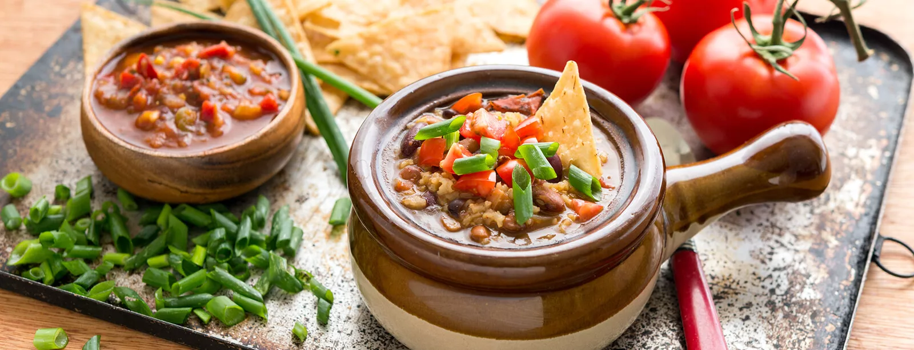

Mexican Rice Soup

Description
This recipe is from Forks Over Knives. Original description: Since this is such a thick soup, I like to have this rolled up in a tortilla for leftovers the next day. This recipe also lends itself well to using different ingredients that you have on hand. Switch up the beans, use some roasted corn, or add some kale. If you don't want it to be so thick, add some additional stock or water. Enjoy with the topping of your choice. We like chopped tomatoes, sliced scallions, salsa, and baked tortilla chips.
Ingredients
- 1 cup long-grain brown rice
- 1 medium onion, chopped
- 4 cloves garlic, minced
- 6 cups low-sodium vegetable stock
- 1 15-ounce can kidney beans, drained and rinsed
- 1 15-ounce can black beans, drained and rinsed
- 1 15-ounce can pinto beans, drained and rinsed
- 1 15-ounce can fire-roasted tomatoes
- 1 tablespoon chili powder
- Salt to taste
Steps
- To toast the rice, put the uncooked grain in a nonstick pan preheated to medium-high and stir constantly for about 5 minutes, or until it is lightly browned.
- In a large saucepan, sauté the onion and garlic in 1 tablespoon low-sodium vegetable stock or water over medium-high heat for 7 minutes.
- Add the rest of the ingredients, including the rice, and reduce heat to low. Simmer for 25-30 minutes.
- Season to taste.
- Serve with toppings of your choice, or the ones listed above.